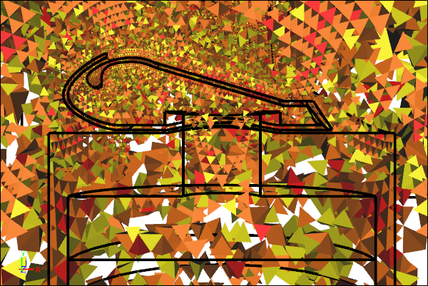

How to Control Your CFD Mesh in Caedium
The Caedium Accuracy tool is largely responsible for determining the accuracy of your Computational Fluid Dynamics (CFD) simulations by imposing constraints on the underlying computational mesh or grid. Therefore, it's worth spending a moment to learn how the Accuracy tool in Caedium works.
Volume Mesh Elements
View a Mesh
It is frequently useful to visualize the mesh elements on faces and volumes to see the effect of changing Accuracy settings and diagnose problems.
 Face Mesh Elements on a Symmetry Plane
Face Mesh Elements on a Symmetry Plane
To view the individual mesh elements on faces you need to set the associated View properties:
- Style = Flat
- Transparent = checked (on)
Volume Mesh ElementsReduced using threshold
To view the individual mesh elements on volumes you need to set the associated View properties:
- Style = Flat
- Transparent = unchecked (off)
Then, assuming you have applied a Substance to your flow domain, you need to apply a results field as a Color Map to your faces or volumes, e.g., E Ratio (quality metric for faces) or Vol Ratio (quality metric for volumes). Next, you can use the threshold sliders in the View Legend for the Color Map to narrow the range of values you want to focus on.
Apply to Geometry
The Accuracy tool can be applied directly to edges, faces, and volumes that are part of a flow domain, where a flow domain can be either a single volume or a group of volumes. Once applied, the mesh sizing will smoothly propagate across all other flow-domain geometry according to the Accuracy->Growth Rate setting.
Accuracy Applied to an Edge
 Accuracy Applied to a Face
Accuracy Applied to a Face
Accuracy Applied to a Volume
Note that applying the Accuracy tool to an edge will typically result in a significantly lower element count than if it's applied to a face or volume. Applying the Accuracy tool to a volume will typically result in a significantly higher element count, which may exhaust your computer's available memory. Therefore, it is best practice to localize your use of the Accuracy tool to significant regions of interest via assignment to edges and faces rather than applying it to volumes.
Accuracy Applied to a Source (Circle) and Target (Rectangle)
If you have a region where you want to control the mesh size but it is not conveniently located near any existing flow-domain geometry, you can create standalone geometry. Apply the Accuracy tool to the standalone geometry as the Source and set the flow-domain as the Target.
Mesh Size
By default all edges in a flow domain are assigned at least one element to ensure a reasonable starting mesh, with extra elements assigned to circular edges.
You can specify the mesh size using either:
- Accuracy->Resolution - to constrain the number of elements along edges and therefore indirectly set the element size.
- Accuracy->Max Element Size - to constrain the maximum element size.
Resolution = 10 Applied to Geometry Faces
Max Element Size = 0.02m Applied to Geometry Faces
The Max Element Size is best applied to complex geometry where there is a wide variety of edge lengths. Specifying the Resolution for such a case would require a unique value for each edge or face, which is a tedious task.
Particle Seeds
If you create standalone geometry (e.g., an edge or face) to serve as a source for particles or streamlines, then you use the Accuracy tool to control the number of mesh nodes that will serve as individual seeds for each particle.
Resolution = 3 Applied to Streamlines Seed Face
Resolution = 5 Applied to Streamlines Seed Face
Diagnose Mesh Problems
When the meshing fails, more often than not it will be caused by a geometry issue. Problems that can cause mesh failures include:
- Open volume - Flow volumes have to be closed or watertight.
- Slivers - Long, skinny faces can force the creation of poor mesh elements. To remedy, you can either join the sliver with a large neighbor or resolve it with smaller mesh elements.
- Close proximity - Closely coupled faces require mesh sizing equivalent to the gap size.
- Small acute angles on faces - Acute angled corners on faces can force the creation of poor mesh elements. To fix, modify the geometry in the region of the acute apex.
- Minute features - Very small geometry features can require excessive numbers of mesh elements to resolve. Locally modifying the geometry can fix this issue if the features are of little significance to your simulation.
Feedback
Questions? Ideas? Problems?

Recent blog posts
- CFD Simulates Distant Past
- Background on the Caedium v6.0 Release
- Long-Necked Dinosaurs Succumb To CFD
- CFD Provides Insight Into Mystery Fossils
- Wind Turbine Design According to Insects
- Runners Discover Drafting
- Wind Tunnel and CFD Reveal Best Cycling Tuck
- Active Aerodynamics on the Lamborghini Huracán Performante
- Fluidic Logic
- Stonehenge Vortex Revealed as April Fools' Day Distortion Field
 Get our Blog feed
Get our Blog feed